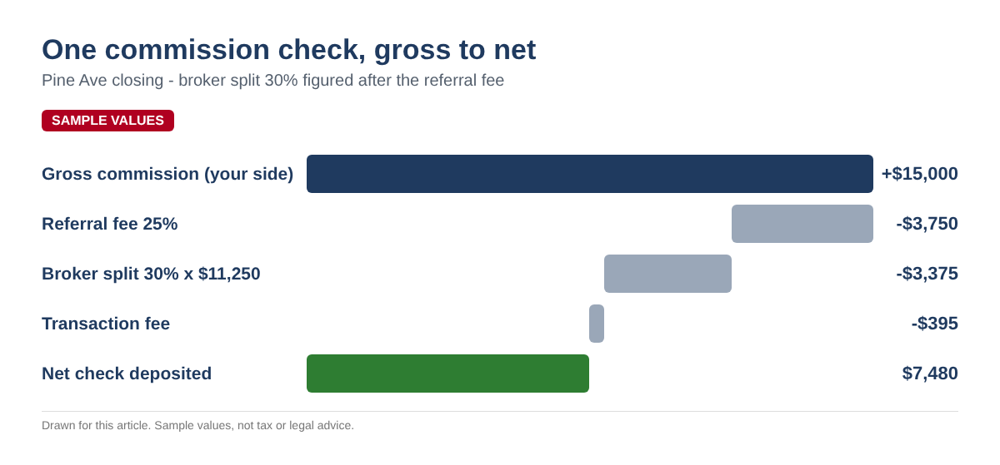
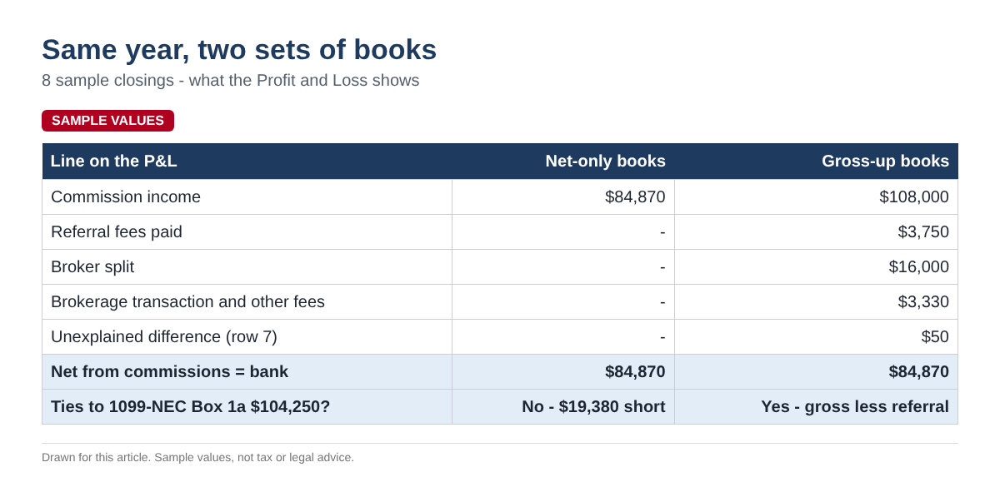
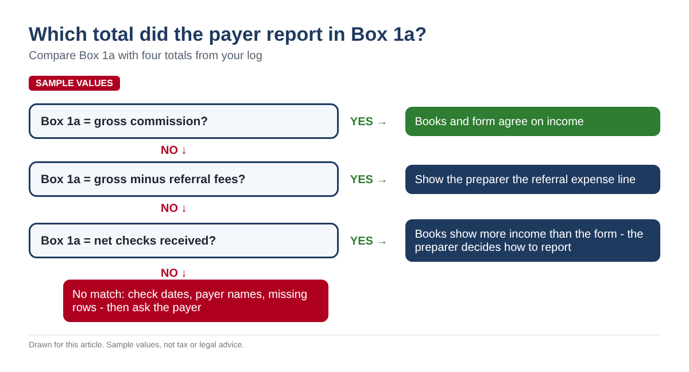

A sample agent closes the Pine Ave sale. The disbursement statement shows a $15,000 commission for her side, a 25% referral fee of $3,750 to the agent who sent the buyer, a 30% broker split of $3,375 and a $395 transaction fee. The check that lands in the business account is $7,480. Over the year she has eight closings like this: $108,000 of gross commission, $84,870 of checks. In January the brokerage's Form 1099-NEC arrives with $104,250 in Box 1a.
If the books hold only the $84,870 of deposits, nothing in QuickBooks explains the $19,380 gap between the deposits and Box 1a, and nobody can see what the brokerage relationship cost. This article walks through recording each check gross, handling an annual cap, entering the deposit in QuickBooks Online and Desktop, and working out which total the payer put in Box 1a. All dollar amounts are sample values.
This is general bookkeeping information, not tax or legal advice; confirm how your own income is reported with a licensed tax professional.
Start from the commission disbursement authorization or settlement statement, not from the bank line. Each deduction becomes its own line in the books, and the gross commission becomes income. The order matters because many agreements figure the broker split after the referral fee is paid out, and some figure it on the full amount.
| Pine Ave closing (sample values) | Amount | How it is figured |
|---|---|---|
| Gross commission (your side) | $15,000.00 | From the disbursement statement |
| Referral fee paid at closing | -$3,750.00 | 25% of $15,000 |
| Broker split | -$3,375.00 | 30% x ($15,000 - $3,750) |
| Transaction fee | -$395.00 | Flat fee per closing |
| Net check deposited | $7,480.00 | Must equal the bank amount |

Recording $7,480 to Commission Income is fast, and the bank reconciles. The problem shows up later. The IRS instructions for Schedule C tell sole proprietors to make sure line 1 includes amounts properly shown on their Forms 1099-NEC. When a payer reports more than the checks you received, net-only books leave you or your preparer rebuilding the year from statements. Gross-up books already carry the larger number, with the split and fees sitting on expense lines where they can be compared year to year.
| 8 sample closings | Net-only books | Gross-up books |
|---|---|---|
| Commission income | $84,870 | $108,000 |
| Referral fees paid | - | $3,750 |
| Broker split | - | $16,000 |
| Transaction and other brokerage fees | - | $3,330 |
| Unexplained difference (one short check) | - | $50 |
| Net from commissions (= bank) | $84,870 | $84,870 |

Both columns end at the same $84,870, so cash and the reconciliation are unaffected. What changes is that the gross-up column can be compared with the 1099-NEC, and the $50 row stands out as a question for the brokerage instead of disappearing inside a lower deposit.
Many split plans stop charging the broker split once the agent has paid a yearly cap. In the sample the plan is 30% with a $16,000 cap. After four closings the agent has paid $15,255. On the fifth closing, Cedar Ln, 30% of $10,500 would be $3,150, but only $745 of the cap is left, so the split is $745 and the check is $10,500 - $745 - $395 = $9,360. Every closing after that has a $0 split until the cap year restarts.
In Excel or Google Sheets, put one closing per row in date order with gross commission in column E, referral fee in F, transaction fee in G, other deductions in H and the check received in I. Put the split rate in $B$1, the cap in $B$2 and type "After referral" or "Before referral" in $B$3. For the first data row (row 6 here) the formulas are:
=IF($B$3="Before referral",E6,E6-F6)=O6*$B$1=SUM(K$5:K5) (row 5 is the header, so the first row adds nothing)=IF($B$2>0,MAX(0,MIN(P6,$B$2-Q6)),P6)=E6-F6-K6-G6-H6=IF(ABS(I6-L6)<0.01,"OK","CHECK")Copy the row down. The MIN and MAX pair is what handles the partial-cap deal: the split can never be more than the cap that is left, and never negative once the cap is used up. Check two things before trusting it: the cap year in your agreement (calendar year or anniversary date) and whether transaction fees continue after the cap. In many plans they do, which is why the sample still deducts $395 on capped deals.
As of Intuit's help article "Record and make bank deposits in QuickBooks Online" (checked 2026-11-25), the deposit form accepts a fee entered as a negative line. That lets one deposit carry the gross income and every deduction:
If you prefer a journal entry, Intuit's "Create a journal entry in QuickBooks Online" path is + Create then Journal entry, and the debit and credit totals must be equal:
| Account (sample) | Debit | Credit |
|---|---|---|
| Business Checking | 7,480.00 | |
| Referral Fees Paid | 3,750.00 | |
| Broker Split Expense | 3,375.00 | |
| Brokerage Fees | 395.00 | |
| Commission Income | 15,000.00 | |
| Totals | 15,000.00 | 15,000.00 |
When the same $7,480 later shows up in the bank feed, make sure it is not recorded a second time; a second entry would put the commission into income twice.
Intuit's "Record and make bank deposits in QuickBooks Desktop" article (checked 2026-11-25) starts from Record Deposits (Make Deposits) on the Home page and allows an amount entered as a negative value on a line with a different From Account. For the Pine Ave check:
Afterwards, run Profit & Loss for the year and compare Commission Income with the total of your closing log, then reconcile the bank account. Each deposit should clear at the net check amount, and each expense line should equal its column total in the log.
On the 2026 Form 1099-NEC, nonemployee compensation is reported in Box 1a (earlier versions of the form used Box 1). Payers do not all build that number the same way. Before deciding anything, compare Box 1a with four totals for that payer: gross commission, gross minus referral fees, net checks received, and expected net (what the checks should have been). In the sample, $104,250 equals $108,000 - $3,750, so this brokerage reported gross commission less the referral fee it paid out on the agent's behalf.

When nothing matches, the cause is usually a closing dated in the other year, a payer name typed two ways in the log, or a deal paid by a title company instead of the brokerage. Fix those first, then ask the payer how Box 1a was built. Do not change recorded transactions just to force a match; give the tie-out and the Profit and Loss to whoever prepares the return, and let them decide how to report a difference.
A referral fee the brokerage pays at closing is the brokerage's payment. A fee you send to another agent from your own account is different: you are the payer. The IRS Instructions for Forms 1099-MISC and 1099-NEC (Rev. 12-2026) state that for tax years beginning after 2025 the minimum reporting threshold increased to $2,000, which may be adjusted for inflation beginning in 2027, and that Form 1099-NEC is filed on or before January 31. A due date that falls on a Saturday, Sunday or legal holiday moves to the next business day, and January 31, 2027 is a Sunday. If your direct referral payments to one person reach that level in 2026, review your filing duty with a tax professional before January.
The IRS page on licensed real estate agents explains that licensed agents are statutory nonemployees treated as self-employed for federal tax purposes when substantially all of their pay is directly related to sales or other output rather than to hours worked, and they work under a written contract providing that they will not be treated as employees for federal tax purposes. Whether that describes you is a question for your agreement and your adviser; the bookkeeping above works the same either way.
You can download the ready-made Commission Split Recorder 2026 for free in the Free kit download box below (Excel + PDF guide, no sign-up).
This article is general educational information about bookkeeping. It is not tax, legal or accounting advice, it does not decide anyone's tax status or how any amount must be reported, and it does not guarantee any result. Rules and software screens change; confirm your own situation with a licensed tax professional. All names and amounts are sample values. QuickBooks is a registered trademark of Intuit Inc.; not affiliated with or endorsed by Intuit.